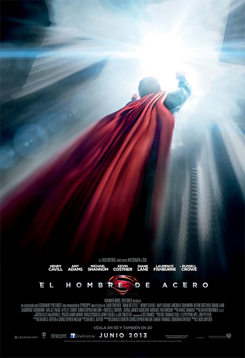

El hombre de acero: Superman (2013)
|  |
Un niño descubre que tiene poderes extraordinarios y que no es de este planeta. En su juventud, viaja para descubrir por qué fue enviado a la Tierra. Pero su héroe interior tiene que emerger para salvar al mundo de la aniquilación. Frente al superhéroe están dos supervivientes de Krypton: el general Zod y su socia Faora.
|